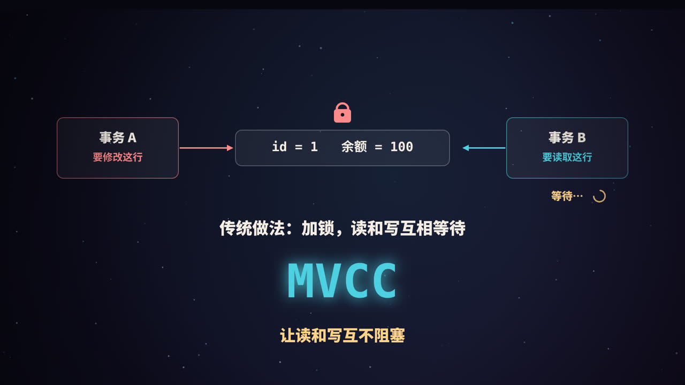
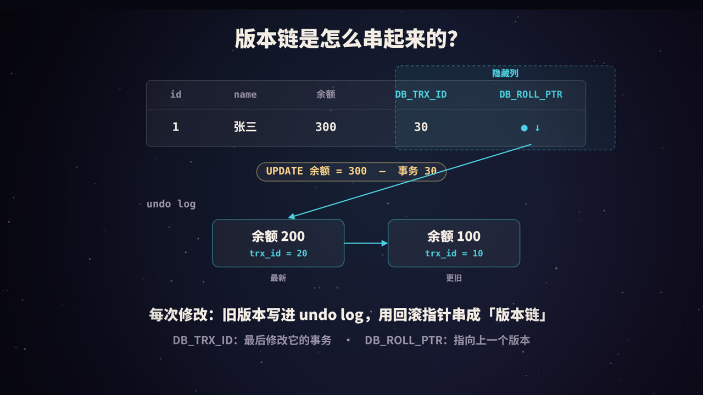
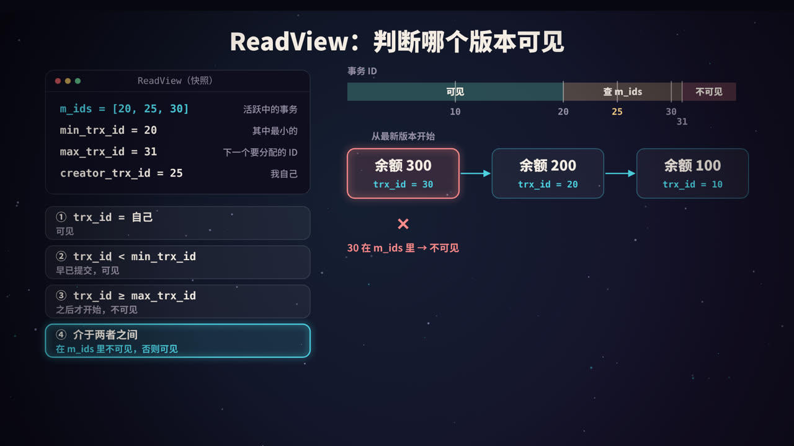
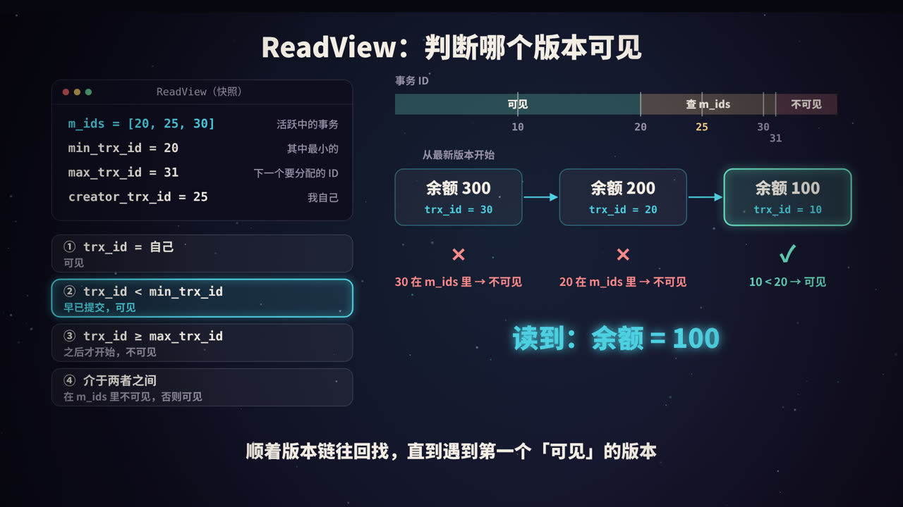
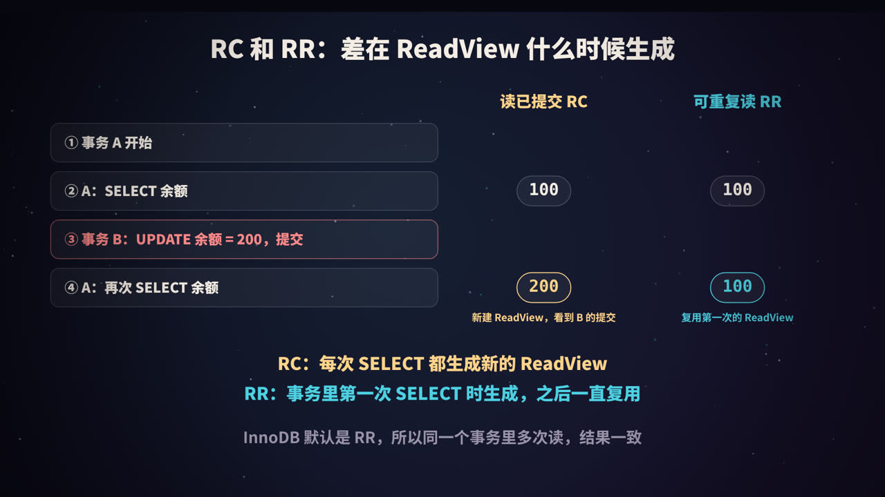
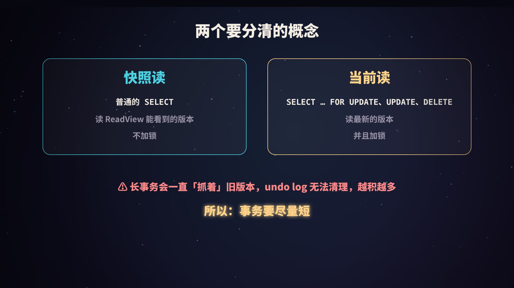

从一个问题开始
事务 A 正在修改一行数据，还没提交；这时事务 B 想读这一行。B 应该读到什么？
- 读到 A 改了一半、还没提交的新值？如果 A 最后回滚了，B 就读到了一个「从未真正存在过」的数据，这叫脏读。
- 那就让 B 等 A 提交以后再读？正确是正确了，但读和写互相阻塞，并发一高，性能就很差。
数据库里读操作通常远多于写操作。有没有办法，既不让读者看到未提交的数据，又不让读者等待写者？
InnoDB 的答案就是 MVCC（Multi-Version Concurrency Control，多版本并发控制）。
先复习：并发事务的三种读问题与隔离级别
| 问题 | 描述 |
|---|---|
| 脏读 | 读到了其他事务未提交的修改 |
| 不可重复读 | 同一个事务里两次读同一行，结果不一样（中间被别人修改并提交了） |
| 幻读 | 同一个事务里两次按同一条件查询，第二次多出了（或少了）几行 |
SQL 标准定义了四个隔离级别：
| 隔离级别 | 脏读 | 不可重复读 | 幻读 |
|---|---|---|---|
| 读未提交（READ UNCOMMITTED） | 可能 | 可能 | 可能 |
| 读已提交（READ COMMITTED，RC） | 避免 | 可能 | 可能 |
| 可重复读（REPEATABLE READ，RR） | 避免 | 避免 | 标准中可能 |
| 串行化（SERIALIZABLE） | 避免 | 避免 | 避免 |
InnoDB 的默认隔离级别是 RR。RC 和 RR 这两个最常用的级别，都是靠 MVCC 实现的；而 InnoDB 的 RR 在 MVCC 和间隙锁的配合下，在很大程度上也避免了幻读（后面会细说）。
核心思路：一行数据，保存多个版本
MVCC 的想法很朴素：修改数据时不直接覆盖旧值，而是把旧版本保留下来。 于是同一行数据在某一时刻可能同时存在多个版本：
- 已经提交了很久的版本 1；
- 刚刚提交的版本 2；
- 某个事务正在修改、还没提交的版本 3。
每个事务读数据时，根据自己的「视角」，从这些版本里挑出它应该看到的那一个。读的人读旧版本，写的人写新版本，互不干扰，也就不需要用锁来协调普通的读写冲突。
要实现这一点，InnoDB 需要三样东西：
- 隐藏列：记录每个版本是谁写的、上一个版本在哪；
- undo log 版本链：把旧版本串起来保存；
- ReadView：判断某个版本对当前事务是否可见的规则。
第一样：隐藏列

InnoDB 会在每一行记录上，自动加几个用户看不到的字段：
| 隐藏列 | 大小 | 含义 |
|---|---|---|
DB_TRX_ID |
6 字节 | 最后一次插入或修改这行的事务 ID |
DB_ROLL_PTR |
7 字节 | 回滚指针，指向 undo log 中这行的上一个版本 |
DB_ROW_ID |
6 字节 | 行 ID，只有表没有主键、也没有非空唯一键时，才会用它生成聚簇索引 |
此外，每行记录头里还有一个删除标记。DELETE 时并不会立刻物理删除这一行，而是先打上标记，等确认没有事务再需要它时才真正清理。
事务 ID 是全局递增分配的，越晚开始写数据的事务，ID 越大。（只读事务通常不会分配这样的事务 ID，只有在第一次修改数据时才会分配。）
第二样：undo log 版本链
undo log 原本是为了回滚而存在的：事务修改数据前，先把旧值记下来，万一事务失败，就能用它把数据恢复原样。MVCC 顺便利用了它。
以视频里的例子来看版本链是怎么形成的：
- 事务 10 插入了一行：
id=1, 余额=100，此时DB_TRX_ID=10。 - 事务 20 执行
UPDATE ... SET 余额=200： - 把旧版本（余额 100，trx_id 10）写进 undo log； - 修改行数据为余额 200，DB_TRX_ID=20； -DB_ROLL_PTR指向 undo log 里那条旧版本。 - 事务 30 执行
UPDATE ... SET 余额=300： - 把余额 200 的版本写进 undo log，它的回滚指针仍然指向余额 100 的版本； - 行数据变成余额 300，DB_TRX_ID=30，回滚指针指向余额 200 的版本。
于是形成了一条从新到旧的链：
当前行: 余额 300 (trx 30) → undo: 余额 200 (trx 20) → undo: 余额 100 (trx 10)
这就是版本链。任何一个事务，都可以顺着回滚指针，找到这一行过去的任意一个版本。
undo log 分两类：插入产生的 undo 在事务提交后就可以删掉（新插入的行没有「更旧的版本」可言）；更新和删除产生的 undo 可能还要服务于其他事务的快照读，必须等没人需要时才能清理。
第三样：ReadView，判断谁可见

ReadView 里有什么
事务在执行快照读时，会生成一个 ReadView（读视图），可以理解为「此刻数据库里各个事务状态的一张快照」。它包含四个关键信息：
| 字段 | 含义 |
|---|---|
m_ids |
生成 ReadView 时，所有活跃（已开始、未提交）的读写事务 ID 列表 |
min_trx_id |
m_ids 中最小的 ID |
max_trx_id |
生成 ReadView 时，系统下一个要分配的事务 ID |
creator_trx_id |
生成这个 ReadView 的事务自己的 ID |
在 InnoDB 源码里，这几个字段分别叫
m_ids、m_up_limit_id（即最小值）、m_low_limit_id（即「下一个要分配的 ID」）和m_creator_trx_id。名字里的 up 和 low 和直觉正好相反，读源码时容易看反。
四条可见性规则
拿版本链上某个版本的 trx_id，按顺序判断：
trx_id == creator_trx_id：这是我自己改的，可见。trx_id < min_trx_id：生成 ReadView 时，这个事务早就提交了，可见。trx_id >= max_trx_id：这个事务是在我生成 ReadView 之后才开始的，不可见。min_trx_id <= trx_id < max_trx_id：看它在不在m_ids里： - 在：生成 ReadView 时它还没提交，不可见； - 不在：生成 ReadView 时它已经提交了，可见。
如果当前版本不可见，就顺着回滚指针找上一个版本，再用同样的规则判断，直到找到第一个可见的版本。如果一直找到链的末尾都没有可见版本，说明这行对当前事务来说「还不存在」，查询结果里就没有它。
走一遍例子
假设事务 25 生成 ReadView 时，事务 20 和 30 都还没提交：
m_ids = [20, 25, 30] min_trx_id = 20 max_trx_id = 31 creator_trx_id = 25

| 版本 | trx_id | 判断 | 结果 |
|---|---|---|---|
| 余额 300 | 30 | 介于 20 和 31 之间，且在 m_ids 里 |
不可见，往回找 |
| 余额 200 | 20 | 介于 20 和 31 之间，且在 m_ids 里 |
不可见，往回找 |
| 余额 100 | 10 | 小于 min_trx_id |
可见 |
所以事务 25 读到的余额是 100。尽管当前行上的最新值已经是 300，但对它来说，事务 20 和 30 的修改都「还没发生」。
RC 和 RR：差在 ReadView 什么时候生成

MVCC 的规则在 RC 和 RR 下完全一样，唯一的区别是 ReadView 的生成时机：
- RC（读已提交）：事务里每一次快照读，都生成一个新的 ReadView。所以每次都能看到在那之前已经提交的修改。
- RR（可重复读）：只在事务里第一次快照读时生成 ReadView，之后整个事务都复用它。所以不管别人中途提交了什么，这个事务看到的始终是同一个「快照」。
用两个会话亲自验证
准备一张表：
CREATE TABLE account (id INT PRIMARY KEY, balance INT);
INSERT INTO account VALUES (1, 100);
打开两个 MySQL 客户端，按顺序执行：
-- 会话 A
SET SESSION TRANSACTION ISOLATION LEVEL REPEATABLE READ;
BEGIN;
SELECT balance FROM account WHERE id = 1; -- 100（此时生成 ReadView）
-- 会话 B（自动提交）
UPDATE account SET balance = 200 WHERE id = 1;
-- 会话 A
SELECT balance FROM account WHERE id = 1; -- RR 下仍是 100；换成 RC 则是 200
COMMIT;
把第一行的隔离级别改成 READ COMMITTED 再做一遍，就能看到区别。
注意：
BEGIN或START TRANSACTION并不会立即生成 ReadView，第一次快照读时才会。如果希望事务一开始就生成，可以用START TRANSACTION WITH CONSISTENT SNAPSHOT。
快照读和当前读

MVCC 只管一类读操作，这一点非常关键。
| 快照读 | 当前读 | |
|---|---|---|
| 哪些语句 | 普通的 SELECT |
SELECT ... FOR UPDATE、SELECT ... FOR SHARE（旧写法 LOCK IN SHARE MODE）、INSERT、UPDATE、DELETE |
| 读哪个版本 | ReadView 可见的版本，可能是历史版本 | 最新的已提交版本 |
| 是否加锁 | 不加锁 | 加锁 |
为什么 UPDATE 一定是当前读
如果 UPDATE 也基于旧快照计算，就会出现「丢失更新」。接着上面 RR 的例子：
-- 会话 A（RR，快照里余额是 100；B 已经把余额改成 200 并提交）
UPDATE account SET balance = balance + 1 WHERE id = 1;
SELECT balance FROM account WHERE id = 1; -- 201，而不是 101
UPDATE 读的是最新值 200，所以结果是 201。更新之后，这一行最新版本的 trx_id 变成了 A 自己，按照规则 1，A 的下一次快照读就能看到它。所以 A 先读到 100，更新后又读到 201，这在 RR 下是正常现象，并不矛盾。
RR 能避免幻读吗
- 对快照读来说：ReadView 在第一次读时就固定了，别的事务后来插入并提交的新行，
trx_id一定不小于max_trx_id，对当前事务不可见。所以同样的SELECT执行多次，不会多出行来。 - 对当前读来说：InnoDB 使用临键锁（next-key lock，即记录锁加间隙锁），把查询范围内的记录和记录之间的「间隙」都锁住，别的事务无法往这个范围里插入新行。
但要注意一种边界情况：事务 A 先快照读，看到 3 行；事务 B 插入第 4 行并提交；A 再执行一次覆盖这个范围的 UPDATE（当前读），会把第 4 行也更新掉，于是第 4 行的 trx_id 变成了 A 自己。A 之后再快照读，就会「突然」看到第 4 行。所以准确地说，InnoDB 的 RR 在绝大多数情况下避免了幻读，但快照读和当前读混用时，仍可能出现类似幻读的现象。 如果业务逻辑依赖「这个范围里不会多出数据」，应该一开始就用当前读（如 SELECT ... FOR UPDATE）加锁。
旧版本什么时候清理：purge 与长事务
undo log 中的旧版本不能一直保留。InnoDB 有后台的 purge 线程，会检查当前所有活跃的 ReadView：如果某个旧版本已经不可能再被任何事务读到，就把它清理掉，同时真正删除那些打了删除标记的行。
问题出在长事务上：只要有一个很早开启、一直不提交的事务，它的 ReadView 就可能需要非常旧的版本，于是从那时起产生的所有 undo 都不能清理。结果是：
- undo 日志越积越多，占用大量存储空间；
- 版本链变长，别的查询沿链查找的成本上升；
- 长事务往往还持有锁，阻塞其他写操作。
怎么发现长事务
-- 运行时间最长的事务
SELECT trx_id, trx_started, trx_mysql_thread_id, trx_query
FROM information_schema.innodb_trx
ORDER BY trx_started
LIMIT 10;
-- 查看 History list length：未清理的 undo 数量，持续变大说明清理跟不上
SHOW ENGINE INNODB STATUS;
怎么避免
- 事务里不要做和数据库无关的耗时操作，比如调用外部接口、等待用户输入；
- 批量处理大量数据时，分批提交；
- 注意框架和连接池的自动提交设置，避免「开了事务忘了提交」；
- 监控
innodb_trx和 History list length，设置告警。
高频面试题速答
Q：MVCC 解决了什么问题？
让读写不互相阻塞：普通 SELECT 读历史版本，不加锁，也不会被写操作阻塞，同时不会读到未提交的数据。
Q：MVCC 由哪几部分组成？
隐藏列（DB_TRX_ID、DB_ROLL_PTR）、undo log 版本链、ReadView 可见性规则。
Q：RC 和 RR 在 MVCC 上的区别？ RC 每次快照读都生成新的 ReadView；RR 只在第一次快照读时生成，之后复用。
Q：MVCC 能完全替代锁吗？ 不能。MVCC 只解决快照读的读写冲突；写和写之间的冲突，以及当前读，仍然要靠行锁、间隙锁、临键锁。
Q：为什么不建议使用长事务？ 长事务会阻止 undo log 清理，导致空间膨胀、版本链变长，而且往往长期持有锁。
总结
- MVCC = 隐藏列 + undo 版本链 + ReadView；
- 修改数据时保留旧版本，读的时候按 ReadView 规则沿版本链找到第一个可见的版本；
- RC 和 RR 的唯一区别是 ReadView 的生成时机；
- MVCC 只作用于快照读；当前读读最新版本并加锁；
- 避免长事务，否则旧版本无法清理。
参考资料
- MySQL 8.0 Reference Manual: InnoDB Multi-Versioning；Consistent Nonlocking Reads；Phantom Rows；Transaction Isolation Levels.
- MySQL 源码：
storage/innobase/include/read0types.h（ReadView 定义）. - 小孩子 4919.《MySQL 是怎样运行的：从根儿上理解 MySQL》.